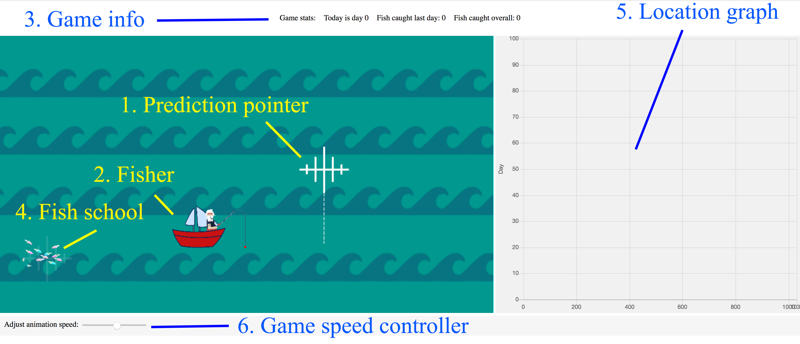

Please read the instructions carefully before proceeding
In the game, you will play for Fisher (2). Your goal is to catch as many fish as possible. To do that, you would need to carefully predict where the Fish school (4) will move tomorrow. The more accurate your prediction is, the more fish you will catch.To make prediction, position prediction pointer (1) using your mouse, and left-click when you are ready to make prediction and proceed to the next day. Aim to predict where the fish school centre will be, as there is much more fish in the centre of fish school, than everywhere else.
On the right hand side you will have location graph (5) which displays previous locations of fish. On the top of the screen there is game information panel (3), displaying how many fish you caught and current day. Finally, on the bottom there is a speed controller (6), which allows you to speed up or slow down the game.
